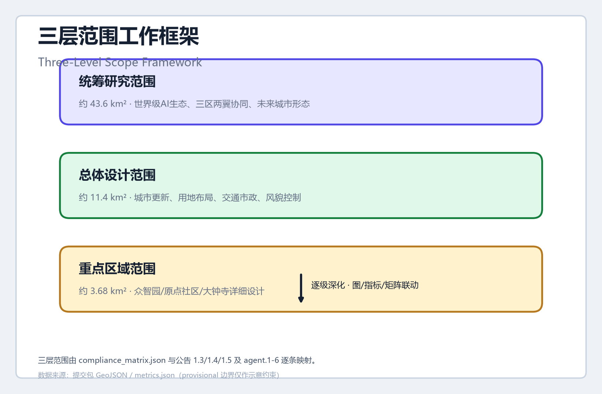
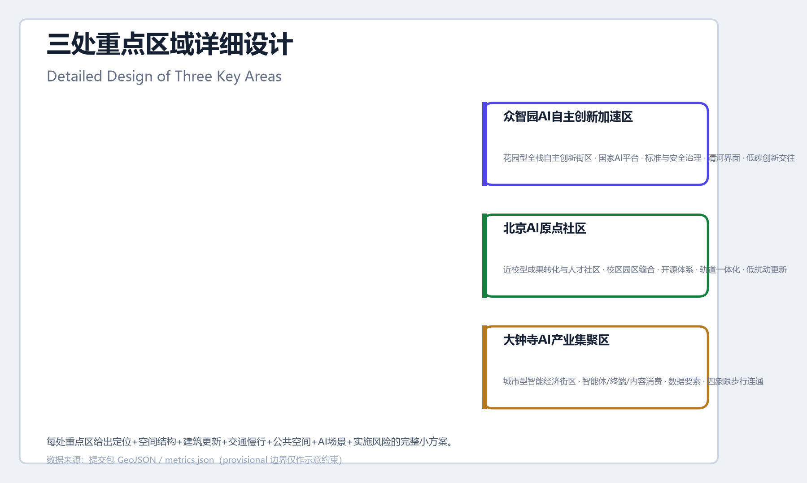
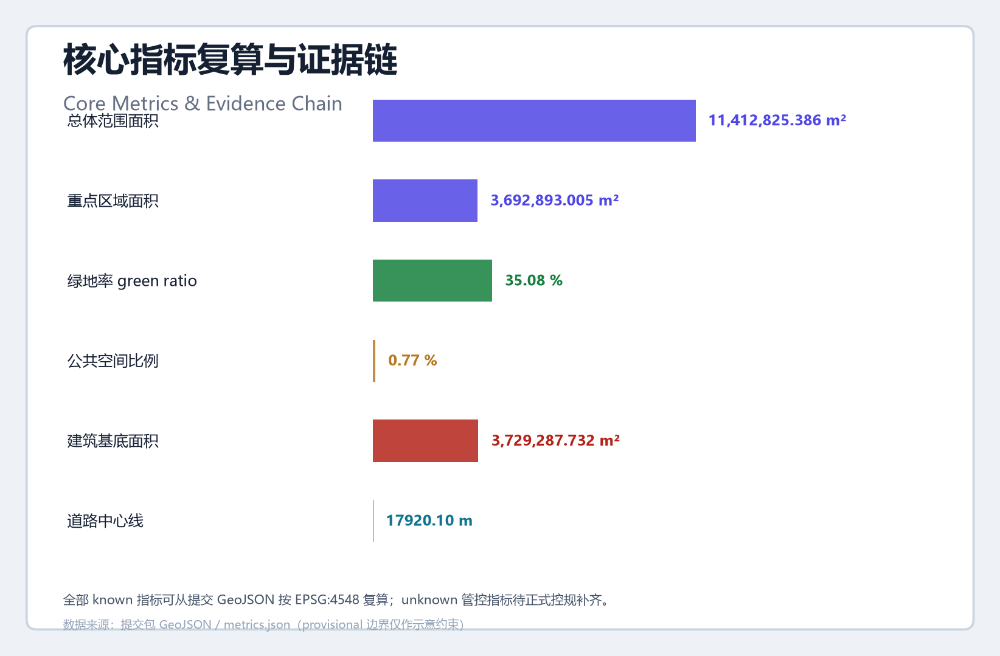

京张人字回路 RENZI LOOP —— 百年京张AI创新带城市设计方案
以京张铁路青龙桥人字形展线为原型，提出『人字回路』总体概念：一带两翼三区构成人字空间结构，数据-算力-模型-场景-人才沿回路循环，让百年自主创新原点成为 AI 时代的全球创新回路与人机共治样板。
京张人字回路 RENZI LOOP
设计依据与资料清单
本方案以北京市规划和自然资源委员会海淀分局发布的《百年京张AI创新带城市设计国际方案征集资格预审公告》为第一设计依据 来源 标准，以面向智能体开源征集任务书为第二依据 来源 标准。方案读取了站点包中的 design_brief.json、allowed_design_space.json、枚举定义、规划限制与来源注册表，并遵循 data/source_registry.json 划分的资料用途边界 来源：formal 依据仅使用官方公告、清权任务书与专业标准；临时边界仅用于方案生成、可视化与讨论 来源 来源。
三层范围的面积、边界文字与重点区域构成均以官方公告为 formal 依据：统筹研究范围约 43.6 平方公里，总体设计范围约 11.4 平方公里，重点区域范围约 368.4 公顷，其中众智园约 192.1 公顷、北京AI原点社区约 104.3 公顷、大钟寺约 72.0 公顷 指标 指标 指标。由于官方精确多边形尚未公开，本包使用维护者登记的临时粗略 polygon 作为 provisional_constraint，不替代 official redline，官方文件发布后需整包重算 指标。
方案的空间证据由提交几何与指标共同支撑：总体范围 11,412,825.386 平方米 指标，用地分区 10 个地块无缝覆盖提交边界 指标 空间数据，绿地与公共空间比例通过提交几何复算 指标 指标。完整来源、指标、标准、设计深度与任务覆盖分别保存在 sources.json、metrics.json、standard_matrix.json、design_depth_matrix.json 与 compliance_matrix.json，正文只放置与判断直接相关的证据标记。

三层范围工作框架
方案按公告确定的三层范围组织工作：统筹研究范围（约 43.6 平方公里）回答"AI 产业生态与未来城市形态如何组织"，聚焦三区两翼产业协同与世界级创新生态 指标；总体设计范围（约 11.4 平方公里）回答"城市更新与控规深度如何落图"，以京张遗址公园周边 1-2 公里城市地区和产业区为对象 指标 深度；重点区域范围（约 368.4 公顷）回答"三处片区如何达到详细设计深度"，覆盖众智园、北京AI原点社区、大钟寺三处 指标 深度。
三层范围逐级落实"一带两翼三区、人字回路"的总体空间结构：京张遗址公园活力带为"人"字竖笔，串联南北三区；中关村科技服务翼与小月河场景赋能翼为"人"字两笔，向东西延伸创新与服务网络 深度。三层工作通过 compliance_matrix.json 与公告 1.3、1.4、1.5 及 agent.1-agent.6 逐条映射，保证每个任务都有章节、图层、指标、图纸与 HTML 证据。
由于本次提交采用临时边界，三层范围的所有面积结论均标注为 provisional：geometry/site_boundary.geojson 与 geometry/key_areas.geojson 均声明 official_boundary=false、geometry_role=provisional_constraint，不用于官方红线、精确面积复算或法定控制 空间数据 空间数据。组织方数据缺口本身不阻断内容评分；替换 official 多边形后，site boundary、key areas、land use、buildings、roads、green space、public space、phasing 与全部指标需重算 [assumption:A-BOUNDARY-001]。

统筹研究范围产业与未来城市研究
统筹研究范围以构建世界级 AI 创新生态为目标。方案围绕海淀高校院所、头部企业、算力算法数据要素、孵化平台与科技服务资源，提出"高校策源—开源协作—企业转化—公共体验—国际传播"的创新链，并强化三区两翼的产业协同回路 来源 标准。命名体系与视觉识别服务于三大定位——百年京张文化带、都市AI生活体验带、AI融合创新带——而不是孤立的口号 深度。
总体命名与视觉识别方向（agent.1）：主名称建议为「京张人字回路」，英文名 RENZI LOOP（Jing-Zhang Renzi Loop）。命名取自京张铁路青龙桥站"人字形"展线——中国铁路自主创新最著名的工程符号。人字形展线用折返换向实现爬坡，是"以空间换高度"的原始创新；本方案把这一历史原型转译为 AI 时代的"创新回路"：数据、算力、模型、场景与人才沿回路循环上升，同时呼应 AI 治理中"人在回路（human-in-the-loop）"的人本原则 来源。Logo 方向为"人字形铁轨 + 回路箭头"复合符号：一条折返轨道在顶点转为环形箭头，寓意自主创新从"人字"出发、沿回路循环、向全球开放。该方向仅作为概念建议，字体、图形与色彩规范需由专业团队按授权条件深化 深度。
全球 AI 创新生态案例（agent.2）：方案梳理 6 个可转化的全球案例。一是美国硅谷 Sand Hill Road 投资生态，验证"资本沿创新链布置"；二是英国伦敦 King's Cross 知识城区更新，验证"铁路遗址 + 知识经济"的城市更新模式；三是韩国板桥科技谷，验证"政府平台 + 企业集聚"的产业空间组织；四是美国波士顿 Kendall Square 双引擎生态，验证"高校策源 + 产业转化"的紧邻互动；五是上海张江科学城平台化运营，验证"大科学设施 + 产业服务"的公共服务网络；六是新加坡纬壹科技城（one-north）"工作-生活-学习-休闲"一体化的复合街区。这些案例分别映射到本带的策源（原点社区）、转化（众智园）、服务（中关村翼）、场景（小月河翼）与体验（遗址公园带）五个环节，作为空间与运营机制的参考素材 深度。
未来城市形态研究：方案认为 AI 将重塑工作、生活、社交、学习、交通与公共服务。统筹研究提出"自适应街区"概念：以弹性用地、共享基础设施、分布式能源与端侧算力为支撑，让城市空间可随产业需求变化而重组。面向 AI 人才与企业的需求，规划可感知、可交互的"AI+"交通系统与连续无界的绿色空间体系 标准。产业战略指标（AI 创新指数、人才密度、产值规模）作为绩效类指标进入 metrics.json 与运营机制，需持续校准，不冒充审定规划条件 指标。
总体设计范围城市更新与控规深度城市设计
总体设计范围以城市更新为抓手，达到控制性详细规划的城市设计深度。方案依据 geometry/land_use.geojson 的用地分区提出产业与空间融合布局 空间数据 深度：科研用地（0802）约 411.9 万平方米承载 AI 研发与创新平台 指标，商业服务业用地（05）约 320.8 万平方米承载产业服务与国际交往，城镇住宅用地（0702）约 93.2 万平方米承载人才居住配套，公园绿地（1401）约 315.4 万平方米构成蓝绿骨架 空间数据。用地分类遵循国土空间用地用海分类指南 标准。
城市更新总体框架区分保留、改造、新建三类逻辑。geometry/buildings.geojson 以概念性建筑基底表达更新意向 空间数据 深度：近校、临遗址公园的低效空间以有机更新为主，潜力产业地块以新建创新载体为主，历史资源点以保留活化为主。建筑总规模、容积率、高度、密度、绿地率与退线等控规指标，因官方控规条件尚未公开，全部列为待确认事项 指标 指标 [assumption:A-CONTROLS-001]，方案仅提出设计方向性建议，不以 agent 推测值冒充审定指标。
产业目标与功能布局围绕海淀"1+X+1"产业体系展开 来源：以 AI 为核心产业，提出"AI+"信软、医疗、教育、法律、生活服务等垂直融合方向，并明确各产业的功能比例与空间组织模式。总体设计通过 geometry/roads.geojson 表达道路微循环与轨道站点接驳关系 空间数据 深度，通过 geometry/green_space.geojson 与 geometry/public_space.geojson 表达蓝绿公共空间系统 空间数据 深度。缺乏官方道路红线、管线、消防与市政条件的内容均写入 assumptions.json，作为正式深化前置条件 [assumption:A-CONTROLS-001]。
重点区域详细设计
三处重点区域分别提出"定位 + 空间结构 + 建筑更新 + 交通慢行 + 公共空间 + AI 场景 + 实施风险"的可读小方案，达到规划综合实施方案的城市设计深度 深度。
众智园AI自主创新加速区（约 192.1 公顷） 指标 空间数据：定位为"花园型全栈自主创新街区"。依托国家人工智能平台建设契机，围绕 AI 全栈自主创新体系、标准制定与安全治理推进产业功能与建筑形态设计；强化清河界面、产业展示、低碳创新交往环境与对外交通组织；以绿色空间承载开放测试、标准工作坊与安全治理展示等 AI 场景 来源。实施依赖清河蓝线、生态与防洪条件以及五环路区域一体化规划，相关工程结论列为待专业确认 [assumption:A-CONTROLS-001]。
北京AI原点社区（约 104.3 公顷） 指标 空间数据：定位为"近校型成果转化与人才社区"。围绕清华、北大、中科院等高校原始创新策源成果，组织校区-园区-街区慢行缝合，补足成果展示发布、人才特区服务、居住生活配套与开源协作空间 来源；围绕五道口、清华东路西口轨道站点开展一体化设计 深度，探索低扰动、有机更新的实施模式。校区边界、权属与首层业态需专业深化。
大钟寺AI产业聚集区（约 72.0 公顷） 指标 空间数据：定位为"城市型智能经济与国际交往街区"。发挥领军企业牵引优势，围绕智能体、智能终端、内容消费等 AI 原生业态探索数据要素与数字资产流通机制 来源；开展规划绿地复合利用与大钟寺站四象限步行连通设计，完善非机动车停放等静态交通组织 空间数据 深度。轨道站一体化、道路交叉口与市政管线条件列为待确认事项。

AI 创新生态、人才画像与 AI+ 场景
方案建立面向 AI 人才与企业的五类用户画像（agent.3）：开源开发者（发布、协作、测试、社区声誉）、初创团队（低成本办公、算力入口、产品试验场）、头部企业访客（展示、商务、国际接待、人才招聘）、周边居民（通勤、休闲、社区服务、低扰动更新）、高校师生（成果转化、跨校协作、日常慢行）。每类画像对应明确的空间响应与自检边界 来源。
方案提出 10 张 AI 场景卡，全部映射到具体图层与空间节点 来源 深度：
| 编号 | 场景卡 | 空间载体 | 说明 |
|---|---|---|---|
| 01 | 开源发布厅 | 北京AI原点社区 | 面向高校、开源社区与初创团队，提供成果发布、代码贡献展示与小型路演 |
| 02 | 安全治理沙盒（产业测试验证） | 众智园 | 将标准制定、安全评测与模型红队测试转译为可参观、可预约、可监管的展示协作节点 |
| 03 | 端侧算力驿站 | 总体设计范围节点 | 与公共服务、企业服务与低碳能源策略结合的新型基础设施原型 |
| 04 | AI慢行导航 | 京张遗址公园活力带 | 以可解释导视与低侵入传感辅助识别慢行断点、拥挤节点与无障碍需求 |
| 05 | 大钟寺国际路演客厅 | 大钟寺AI产业聚集区 | 服务智能体、智能终端与内容消费企业的展示、洽谈、媒体发布与国际交流 |
| 06 | 清河低碳创新廊（产业测试验证） | 众智园临清河界面 | 把绿色空间、雨洪、步行骑行与 AI 展示结合，作为园区公共客厅 |
| 07 | 近校成果转化街 | 北京AI原点社区 | 面向高校成果转化，组织孵化、展示、法务、知识产权与投融资服务 |
| 08 | 数据要素会客厅 | 大钟寺片区 | 以合规、授权、可审计为前提，展示数据要素与数字资产流通的城市服务界面 |
| 09 | AI生活服务样板街 | 社区与商业交汇处 | 将医疗、教育、法律、生活服务等 AI+ 场景落到可运营的小尺度街区 |
| 10 | 全球AI活动周路线（产业测试验证） | 一带公共空间系统 | 形成从遗址文化、开源社区、产业展示到国际路演的可步行、可传播体验路线 |
所有 AI 场景遵守数据最小化、公开来源、可解释与人工复核原则 标准：不采集个人行为轨迹，活动数据只做聚合统计，算力与数据服务另行授权，企业标识与案例须清权 标准。AI 场景节点进入结构化图层与合规矩阵，便于评审者看到场景与产业、空间、公共利益的关系 空间数据。
用地、建筑规模与拆改留方案
用地方案依据国土空间用地用海分类表达，形成完整、闭合、无缝的用地分区 标准：科研用地（0802）411.9 万平方米、商业服务业用地（05）320.8 万平方米、城镇住宅用地（0702）93.2 万平方米、公园绿地（1401）315.4 万平方米 空间数据 空间数据。用地分区并集严格等于提交边界，无重叠、无缝隙 指标。
建筑方案以 geometry/buildings.geojson 的 14 个概念性建筑基底表达更新意向 空间数据 深度，建筑基底总面积约 372.9 万平方米 指标，涵盖 AI 研发、实验室、孵化器、办公、混合功能、人才公寓、文化与零售类型 深度。拆改留方案区分 concept_new_build（新建概念）、concept_renovate（改造概念）与保留对象，仅作为设计方向，因缺乏现状建筑、权属、控规与工程条件，不形成具体地块拆改留结论 [assumption:A-CONTROLS-001]。
建筑规模与强度指标与 metrics.json 和图层一致：总建筑规模、容积率、建筑高度、建筑密度、绿地率与退线因缺少官方控规条件，全部列为 unknown 或 pending_control 指标 指标，不以固定数值制造精确感。A3 文册给出更新项目清单与指标复核表，A0 展板表达关键空间结构与重点片区，HTML 提供指标与图层联动查看 深度。
交通、轨道、市政与公共服务设施
交通方案围绕轨道站点一体化、道路微循环、慢行断点、对外交通、停车与非机动车组织展开 深度。geometry/roads.geojson 表达一条南北向慢行主脊与 7 条东西向联络线，中心线总长约 17,920 米 空间数据 指标，覆盖京张遗址公园慢行主脊、北三环、学院路、清华东路西口、五道口、成府路、清河与北五环南路等关键联系。道路红线、管线、消防与市政条件缺失的内容，通过 assumptions.json 说明为待补事项 [assumption:A-CONTROLS-001]。
轨道站点一体化聚焦五道口、清华东路西口、大钟寺站三个关键节点 来源 空间数据：五道口站服务原点社区人才流动，清华东路西口站服务高校与园区慢行缝合，大钟寺站开展四象限步行连通与非机动车停放组织。市政与公共服务设施覆盖 AI 产业服务设施、创新服务平台、人才生活服务设施、新型基础设施、分布式能源、端侧算力与传统市政设施融合 深度；设施标准、空间布局、服务半径与运营模式需在正式深化时结合官方市政资料确认。

蓝绿空间、公共空间与城市风貌
蓝绿空间方案以京张遗址公园活力带为骨架，统筹清河、小月河、周边高校、企业与社区出行需求 标准。geometry/green_space.geojson 表达公园绿带与蓝绿生态指状绿楔，绿地面积约 400.4 万平方米、绿地率约 35.1% 空间数据 指标；geometry/public_space.geojson 表达 6 处广场节点，公共空间面积约 8.8 万平方米、比例约 0.8% 空间数据 指标，覆盖大钟寺站前广场、AI原点社区发布广场、五道口创客广场、清华东路西口人才广场、众智园清河创新客厅与北五环门户景观节点 深度。
AI 公共空间与朝圣地标（agent.4）：方案提出 3 个 AI 朝圣地标或荣誉展示节点。一是"人字原点"——将青龙桥人字形展线符号引入遗址公园北段，作为百年自主创新与 AI 创新交汇的纪念节点；二是"开源贡献墙"——在 AI 原点社区设置面向全球开发者的荣誉展示体系，记录开源贡献与社区里程碑；三是"全球 AI 治理回廊"——在众智园结合标准与安全治理功能，形成展示 AI 治理共识的公共叙事空间 来源。地标、导视、Logo、字体、图像、人物与企业标识均需清权，概念地标不得表述为已批准建设 标准。
城市风貌融合京张铁路历史文化、中关村创新文化与 AI 创新文化，利用清华园火车站等文化资源与北影等艺术资源 来源。风貌控制分清官方管控、设计建议与待确认条件，严禁在没有文保或控规依据时给出伪精确控制线；建筑高度、体量、风格与色彩引导作为方向性建议，待正式控规条件确认后深化 指标。
更新项目清单、实施政策与分期计划
更新项目清单与分期计划由 geometry/phasing.geojson 表达，分近期试点、中期更新、长期框架三个阶段 空间数据 深度：
| 项目编号 | 项目名称 | 类型 | 分期 | 主要依赖 |
|---|---|---|---|---|
| JZ-01 | 京张遗址公园慢行断点缝合 | 公共空间/交通 | 近期 | 道路红线、桥下空间、交通组织复核 |
| JZ-02 | 众智园清河创新界面 | 蓝绿空间/产业展示 | 近期 | 河道蓝线、生态与防洪条件 |
| JZ-03 | 原点社区近校成果转化街 | 城市更新/产业服务 | 中期 | 校区边界、权属、首层业态 |
| JZ-04 | 大钟寺站四象限步行连通 | 轨道一体化/慢行 | 中期 | 轨道站点、道路交叉口、市政管线 |
| JZ-05 | AI公共服务与端侧算力节点 | 新基建/公共服务 | 中期 | 能源、算力、安全与运营主体 |
| JZ-06 | 全球AI活动周公共路线 | 运营/品牌 | 长期 | 公共空间许可、活动安全、版权清权 |
实施政策建议覆盖城市更新统筹实施、空间供给、运营机制、产业服务、公共参与、数据治理与产权协同 深度。征集设计周期（约 100 天）与实施分期明确区分：征集周期是提交成果的时间要求，实施分期是城市更新与项目建设的推进路径。分期结论因缺少权属、资金、实施主体与审批路径，全部作为实施风险与深化方向，不承诺落地 [assumption:A-CONTROLS-001]。
全球 AI 创新活动体系与长期运营（agent.6）：方案提出年度活动体系——以"全球 AI 活动周"为年度旗舰，配合开发者大会、开源贡献日、场景开放日、国际路演季与人才双选会形成全年节奏 来源。开发者社区运营机制以开源发布厅、贡献墙与人才服务驿站为空间载体，建立"活动—场景—人才—企业"转化路径；场景开放运营以安全治理沙盒与端侧算力驿站为试点，按"可参观—可预约—可监管"分级开放 标准。所有活动、招商、资金、政策与运营安排均表述为概念建议或深化方向，不构成已确定政府安排 深度。
指标体系、面积复算与合规矩阵
指标体系分为三类 深度。
第一类为可由提交几何直接复算的空间指标。总体范围面积 11,412,825.386 平方米 指标，重点区域面积 3,692,893.005 平方米 指标，绿地率 35.08% 指标，公共空间比例 0.77% 指标。
建筑基底面积 3,729,287.732 平方米 指标，道路中心线长度 17,920.097 米 指标。用地地块数 10 个 指标，重点区域数 3 个 指标，分期数 3 个 指标。
第二类为需要官方控规支撑的管控指标——容积率 指标、建筑高度 指标、建筑密度、退线与道路红线，全部列为待正式数据补齐。
第三类为需要产业与运营数据持续校准的绩效指标——AI 创新指数、人才密度、产值规模、慢行可达性、活动参与度与场景使用频次，进入运营机制持续校准。
三类指标分别进入 metrics.json、assumptions.json 与 compliance_matrix.json，避免把运营愿景误写成审定规划条件。合规矩阵覆盖公告 1.3、1.4、1.5 全部任务与 agent.1-agent.6 全部任务 深度；标准矩阵覆盖 6 项登记标准 标准 标准；设计深度矩阵覆盖 15 项必需深度项，全部声明为 complete。每个核心指标在正文解释设计含义：绿地率支撑人才生活与创新交往，公共空间比例支撑日常交流与国际交往，建筑基底回应产业空间供给，道路中心线表达慢行与交通组织 深度。

风险、版权与合规说明
本方案为 AI agent 生成的开源共创建议，不替代正式规划，不构成政府审定结论 来源。空间落地建议均为概念建议、参考方案或可供专业团队深化研究的材料，不以任何形式表述为已批准建设、已确定政策或已落实施工 深度。临时边界（provisional constraint）不得作为官方红线、精确面积复算或审批依据 空间数据 [assumption:A-BOUNDARY-001]。
版权与合规说明：所有引用资料均为公开或用户清权资料，来源与用途边界记录在 sources.json 与 report/copyright_statement.md；方案使用的基础图件与数据均声明来源与许可状态，不包含非公开规划图件、未授权素材或个人数据 来源。AI 场景遵循数据最小化、可解释与人工复核原则，符合生成式人工智能服务管理相关要求 标准，公共空间与数字服务遵循无障碍与适老化并行原则 标准 标准。
待补资料清单：官方精确边界与重点区域多边形、正式控规条件（容积率、高度、密度、绿地率、退线）、道路红线、权属、市政管线、消防、防洪与文保条件、现状建筑与用地数据。上述资料补齐后，本包需重算全部几何、指标与图纸并重新自检 [assumption:A-CONTROLS-001]。
参考资料
1. 百年京张AI创新带城市设计国际方案征集资格预审公告，北京市规划和自然资源委员会海淀分局，2026-05-09，https://ghzrzyw.beijing.gov.cn/zhengwuxinxi/tzgg/hd/202605/t20260509_4643047.html 2. 面向全球智能体开展"百年京张AI创新带城市设计开源征集"任务书摘录，用户提供清权文档，2026-05-18 3. 百年京张AI创新带临时粗略边界与三处重点区 polygon，仓库维护者登记，2026-06-05 4. "三区两翼"打造世界级AI集聚地，北京市科学技术委员会、中关村科技园区管理委员会，2026-04-03 5. 海淀区发布"1+X+1"现代化产业体系建设布局，北京市海淀区人民政府，2026-03-02 6. 城市设计管理办法，住房和城乡建设部，2017-03-14 7. 城市、镇控制性详细规划编制审批办法，住房和城乡建设部 8. 国土空间调查、规划、用途管制用地用海分类指南，自然资源部，2023-11-22 9. 生成式人工智能服务管理暂行办法，国家互联网信息办公室等七部门，2023-07-13 10. 中华人民共和国无障碍环境建设法，全国人民代表大会常务委员会，2023-06-28 11. 国务院办公厅关于印发《关于切实解决老年人运用智能技术困难实施方案》的通知（国办发〔2020〕45号），2020-11-24 12. 完整机器索引见 sources.json、metrics.json、compliance_matrix.json、standard_matrix.json 与 design_depth_matrix.json 来源